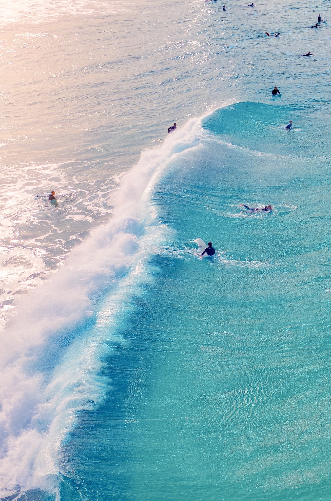

More About Surfing
When surfers see a wave they can ride, they paddle quickly to catch the rising wave. Just as the wave breaks, the surfers jump from their bellies to their feet, crouching on their boards. Being able to stand up is the mark of an experienced surfer. Surfers ride the wave as it breaks toward the shore. As the wave falls and loses power, surfers can exit the wave by turning their boards back toward open water. Surfers can also exit by simply lowering themselves back to their boards and paddling back out. Of course, the force of the wave can end surfers' rides by crashing on or over them. Surfers can be tossed above a wave or below it. Then the process of paddling out to the surf line begins again.
Surfers must be aware of their physical skills as well as the environment. There are several different types of surfing (longboard, shortboard or big-wave, for instance). Each requires a different sets of skills. All surfers must be aware of weather patterns and topography, or surface features, of the shore. Experienced surfers are also familiar with bathymetry, the depth of the body of water. They must be strong swimmers. Surfers must also have an excellent sense of balance and be able to quickly react to changes in the environment.
